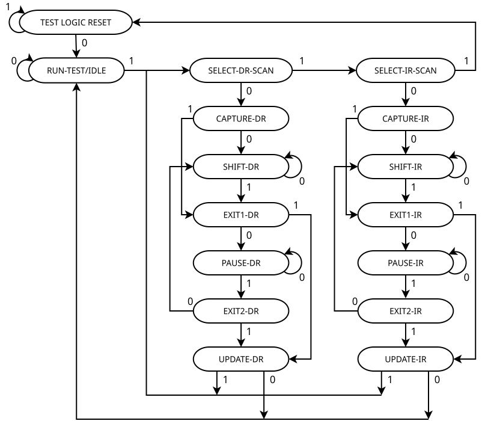

11.1. JTAG Interface
Speck2e provides a JTAG interface that allows access to multiple internal chip resources:
Internal SRAMs (R/W)
Scan chains
Asynchronous Input/Output buses
The JTAG interface is generally slower than SPI for internal SRAM R/W operations, and is implemented to provide alternative access to the memories for debugging and testing purposes.
11.1.1. JTAG Port
The JTAG interface is accessible via the following pins:
Pin |
Description |
IO5_TMS |
Mode Select pin |
IO3_TCK |
JTAG Clock |
IO4_TDI |
JTAG Data In |
IO6_TDO |
JTAG Data Out |
11.1.2. JTAG TAP Controller Operation
The JTAG interface is represented by a state machine (TAP Controller) that is operated by the TMS and TCK signals as represented below:


JTAG TAP Controller State Diagram
In the state diagram, TMS selects the next state and a TCK pulse moves to one state to the selected one.
When in the SHIFT_IR or SHIFT_DR states, the chip expects the user to clock in, respectively, an 8 bit instruction (see JTAG Command Reference) or a data stream of variable length, depending on the operation mode.
To clock in the data, TCK and TDI pins are used, while the output data is read simultaneously on the TDO pin.
11.1.2.1. Getting to Reset State
As shown in the TAP Controller State Machine diagram, the controller can be moved to the TEST LOGIC RESET state from any other state by:
Set TMS pin to ‘1’
Send 5 TCK pulses
This guarantees that the current state is TEST LOGIC RESET.
As illustrated in the diagram below, keeping TMS high for 5 TCK cycle will force the state machine to go back to Test Logic Reset state no matter in which state TAP controller is:
11.1.3. High level commands: send_ir and send_dr
There are two main operations that the JTAG TAP state machine controls:
Instruction Register Scan (IR Scan)
Data Register Scan (DR Scan)
These high-level commands are defined to simplify the further description of the different operating modes for the Speck2e JTAG interface.
send_ir (Send Instruction Register): corresponds to moving to the SHIFT-IR state, then clocking in the instruction via the TDI/TCK pins. The instruction is always 8 bits long.
send_dr (Send Data Register): corresponds to moving to the SHIFT-DR state, then clocking in a stream of bits of variable length via the TDI/TCK pins and, when required, recording the output data available on the TDO pin.
11.1.3.1. IR Scan Timing
The following timing diagram shows the Instruction Register Scan operation:
Some important information:
Instruction data is transferred always LSB first in TDI bus
The data received from TDO bus is also always LSB out first
Instruction length is fixed and it is “8-bits”
The captured instruction that is transferred to TDO bus is always “b0000_0101”
11.1.3.2. DR Scan Timing
The following timing diagram shows the Data Register Scan operation:
Some important information:
The data is transferred always LSB first in TDI bus
The data received from TDO bus is also always LSB out
Data length varies depending on the operation (e.g., scan chain, register read, or memory read)
The captured data that is transferred to TDO bus also varies with the operation in progress
11.1.3.3. TDI/TDO Timing
The timing for TDI/TDO is as follows: - TDI and TDO are sampled/valid on the rising edge of TCK
11.1.4. JTAG IDCode
The JTAG ID Code is provided for testing the JTAG functionality.
ID = 0x149511C3
The ID Code can be read out using the following sequence of commands:
send_ir(IDCODE, 8 bits)
send_dr(0x00000000, 32 bits) # Read ID code on TDO